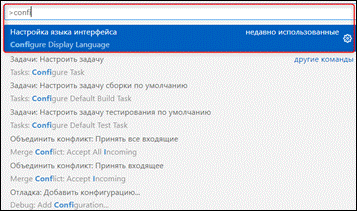
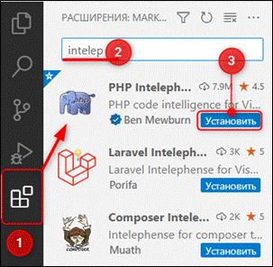

Для прохождения 3 модуля "Создание социальной
сети с нуля" потребуется установить ряд программ:
|
AMPPS |
Visual Studio Code с расширением «PHP Intelephense» |
|
|
|

Приступим к установке. Убедитесь, что на вашем
компьютере есть 20 Гб свободного места.
Для начала найдём и установим AMPPS – эта программа понадобится для разработки на Apache, MySQL, PHP.
Установка AMPPS
|
|
AMPPS (WAMP
– MAMP
– LAMP)
– это стек решений Apache, MySQL, PHP, Perl и Python для Windows и macOS. Он поставляется с более чем 300
готовыми PHP веб-приложениями и с различными версиями PHP. AMPPS используется
для разработки приложений на PHP, MySQL, таких как WordPress, Joomla и Drupal. WAMP – Windows Apache MySQL PHP. MAMP – Mac Apache MySQL PHP. LAMP – Linux Apache MySQL PHP. |
У AMPPS имеется свой собственный
сайт, на котором можно скачать свежую версию установочного пакета, также на
него можно перейти при помощи QR-кода. Данный сайт можно легко найти в Интернете.
Для этого откроем любой браузер, например, Edge (рис. 8), и введём в поисковую
строку запрос «AMPPS». Далее переходим на
первую полученную вкладку официального сайта AMPPS (рис. 9).
Рис. 8. Открываем любой браузер для
выполнения запроса
Рис. 9. Переход по ссылке на официальный сайт
AMPPS
После перехода по
ссылке откроется официальный сайт платформы AMPPS. На данной странице размещена ссылка на загрузку
установочного файла (Windows, macOS, Linux). Если операционная
система – Windows, необходимо
нажать на кнопку «Download»
под соответствующей иконкой (рис. 10, п. 1), для системы macOS скачать программу можно точно так же, только
нужно нажать кнопку под иконкой macOS (рис. 10, п. 2).
Рис. 10. Загрузка установочного файла для Windows и macOS
После загрузки файла приступим к самой установке. Открываем файл и
первым делом принимаем лицензионное соглашение программы (рис. 11), после чего
в новом открывшемся окне «Information» нажимаем «Next» (рис.
12).
|
|
|
|
Рис. 11. Лицензионное соглашение AMPPS |
Рис. 12. Окно информации |
|
|
|
|
Рис. 13. Выбор места расположения программы на компьютере |
Рис. 14. Отображение папки в стартовом меню |
Второй шаг - это выбор папки
размещения данной программы и отображение в стартовом меню «Пуск». При нажатии
на кнопку «Browse…» откроется
проводник для выбора пути расположения AMPPS (рис.
13, п. 1). Если путь уже выбран, или стандартный предложенный путь программы устраивает,
дополнительных настроек не производим. Нажимаем на кнопку «Next» (рис. 13, п. 2). После откроется
окно для включения отображения папки в стартовом меню (рис. 14).
Следующим шагом будет выбор
дополнительных задач, таких как создание ярлыка на рабочем столе, иконки
быстрого доступа и иконки в стартовом меню (рис. 15, п. 1). Включим «Create a desktop shortcut», если необходимы другие задачи, то
включите по своему усмотрению (рис. 15, п. 2). После чего начнем установку
приложения (рис. 16).
|
|
|
|
Рис. 15. Выбор
дополнительных задач |
Рис. 16. Установка
программы |
По окончании установки программы AMPPS откроется лицензионное окно Microsoft Visual C++ в котором принимаем условия
лицензии (рис. 17, п. 1). Программа AMPPS установлена (рис. 18).
|
Р |
|
|
|
|
Рис. 17. Лицензионное
соглашение Microsoft Visual C++ и
установка |
Рис. 18. Окончание
установки программы AMPPS |
Когда программа AMPPS скачана и установлена, в нее
необходимо загрузить все необходимые языки программирования для создания сайта
(рис. 19), данный процесс займет несколько минут. После окончания загрузки в
окне программы отобразятся необходимые языки (рис. 20).
|
Рис. 19. Загрузка языков программирования |
Рис. 20. Интерфейс программы AMPPS |

В открывшейся программе AMPPS можно проводить различную
настройку при помощи значка в виде шестеренки (рис. 21, п. 1). Для проверки
работы программы перейдем на главную страницу localhost, нажав на кнопку в виде
карты мира в верхней панели инструментов (рис. 21, п. 2). На открывшейся
странице будут отображаться файлы, находящиеся
в папке «WWW». Так мы убедимся, что программа AMPPS работает (рис. 22).
|
Рис. 21. Настройка среды разработки |
Рис. 22. Проверка работы программы |

Установка Visual Studio Code
|
|
Visual Studio Code – это упрощенный, но мощный
редактор исходного кода, который работает на компьютере и доступен для Windows, macOS и Linux. Имеет встроенную поддержку JavaScript, TypeScript и Node.js, а также обширную экосистему
расширений для других языков и сред выполнения (например, C++, C#, Java, Python, PHP). |
Для
данного модуля также понадобится программа Microsoft Visual
Studio Code, ее можно
найти на официальном сайте Visual
Studio Code по ссылке, либо перейдя по QR-коду. Указав в поисковой строке «Microsoft Visual
Studio Code скачать» и
перейдя на первый полученный запрос (рис. 23), мы увидим варианты устоновочного
файла для трех операционных систем (Windows, Linux, Mac) (рис. 24).
Рис. 23. Переход по ссылке на официальный
сайт Visual Studio Code
Рис. 24. Загрузка установочного файла для Windows, Linux и macOS
После загрузки файла приступим к установке. Принимаем лицензионное
соглашение (рис. 25). В новом окне выбираем путь размещения папки программы Visual Studio
Code (рис. 26, п. 1), если выбранный путь по
умолчанию устраивает, никаких изменений не нужно делать (рис. 26, п. 2).
|
|
|
|
Рис. 25. Лицензионное соглашение Visual Studio Code |
Рис. 26. Выбор места расположения программы
на компьютере |
Следующим шагом является создание ярлыка в меню «Пуск», при
необходимости можете его включить (рис. 27). После включаем все дополнительные
задачи (рис. 28).
|
|
|
|
Рис. 27. Отображение папки в стартовом меню |
Рис. 28. Включение дополнительных задач
программы |
Все настройки перед
установкой программы сделаны, нажимаем кнопку «Установить» (рис. 29). После
завершения всех действий откроется стартовое окно программы для начала создания
программного кода.
Рис. 29. Установка программы
На стартовой странице можно
выбрать тему интерфейса, темную или светлую (рис. 30, п. 1), также необходимо
установить языковой пакет с русским языком. Для этого в появившемся уведомлении
внизу нажмем «Установить и перезагрузить» (рис. 30, п. 2). Если данное
уведомление не появилось, то можно при помощи сочетания клавиш Ctrl+Shift+P открыть поисковую строку,
написать слово «config» – в первой строке поиска появится «Настройка языка интерфейса/Configure Display Language». Нажимаете на нее и выбираете необходимый язык интерфейса (рис. 31).
Рис. 30.
Стартовая страница запуска Visual Studio Code

Рис. 31. Настройка языка интерфейса
Настроив язык интерфейса,
переходим к расширениям в левой части меню (рис. 32, п. 1). В поисковой строке
вводим «Intelep…» (рис. 32, п. 2), программа выводит в первой же строке необходимое
расширение «PHP Intelephense». Устанавливаем его (рис. 32, п. 3). Данное расширение позволит проще
искать ассоциативные подсказки при разработке. Программа готова к работе!

Рис. 32. Установка расширения